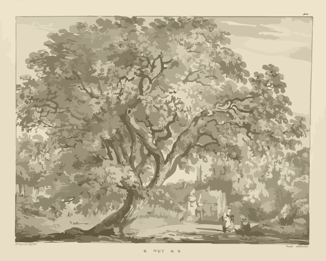

Skip to Main content
Home
Resources
Resources
For Kids
Arbor Day Youth Education
For Students
Composting on Campus
Why Composting Shouldn't Be Your First Choice
Recycling on Campus
For Anyone in Tree Town
Ann Arbor Composting
Ann Arbor Recycling
A-Z Recycling Guide
